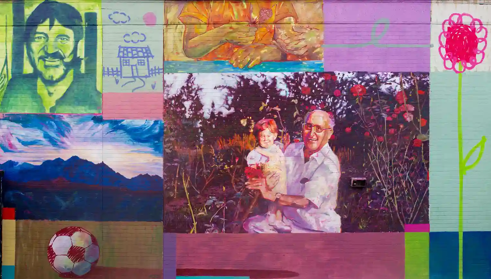
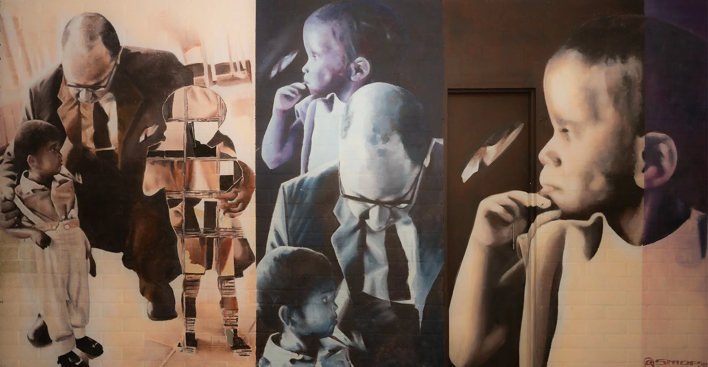

HISTORIA DEL MUSEO
Historia del museo
Cómo nació y creció el proyecto del Museo Escolar Héctor Abad Gómez.
NIQUI DICE:
¡Esta es nuestra historia! Aquí descubrirás cómo nació el museo y como se ha desarrollado hasta hoy.
Un proyecto de memoria colectiva
El Museo Escolar no nació en una sala de exposición convencional, sino en el aula 402, de la Sede San Lorenzo, frente a una pared blanca que se convirtió en el punto de partida de una historia. Allí, los niños y niñas de grado tercero tomaron los pinceles para representar a Héctor Abad Gómez, sus ideas, su legado y su manera de entender la vida, poniendo la razón en el centro y los sentimientos cerca del corazón.
Alrededor de su rostro se fueron plasmando valores como la dignidad, la empatía, la resiliencia, la solidaridad y el respeto, convirtiendo el mural en una expresión de lo que significa aprender a convivir y reconocer al otro. Esta primera pintura transformó la pared y también las formas de habitar la escuela porque entendimos que el arte es una forma de expresar lo que somos, de contar nuestras historias y hacer de ella un lugar que se piensa, se sueña y se construye colectivamente.


Nuestro propósito
Hacer del arte una herramienta para expresar, reconocer y transformar las historias de la comunidad educativa, promoviendo la participación de niños, niñas, jóvenes y de la comunidad educativa en la construcción de relatos sobre sus trayectorias familiares, culturales y académicas, así como sobre las experiencias de migración y movilidad humana que hacen parte del territorio.
A través de los murales y otras expresiones artísticas, el Museo Escolar busca fortalecer el sentido de pertenencia, valorar la diversidad, promover la inclusión y contribuir a una cultura basada en la dignidad, la convivencia, el respeto y la garantía de los derechos humanos.